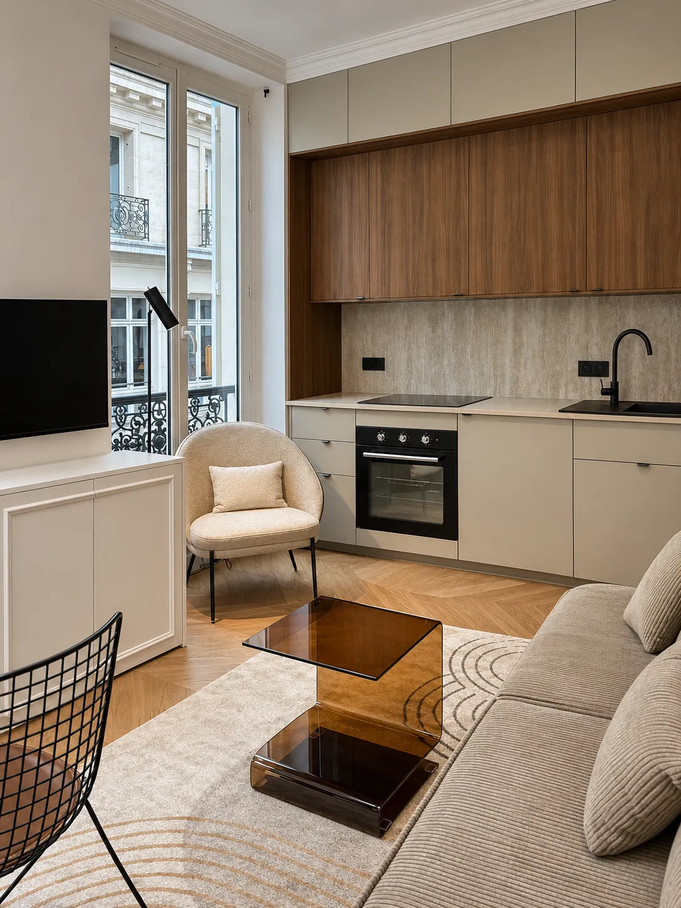
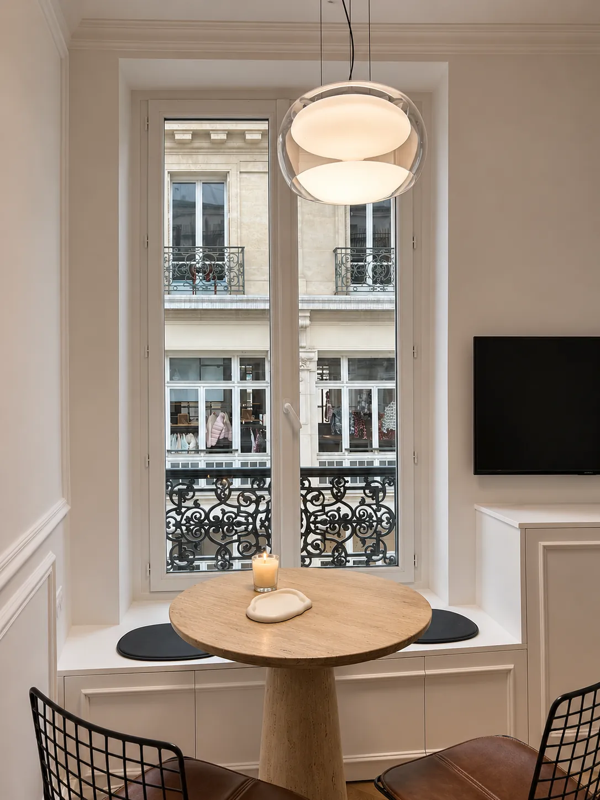
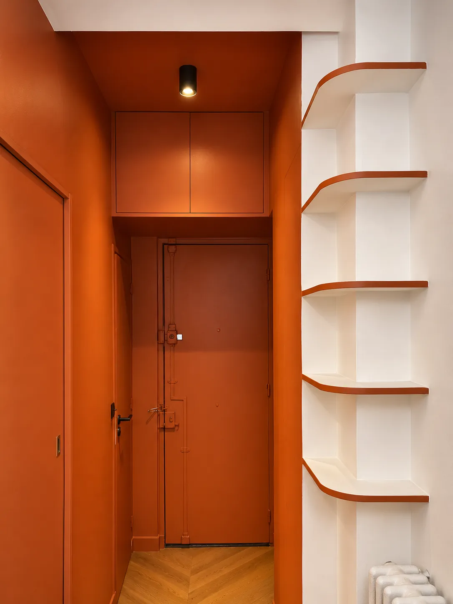

Stouls Studio / Portfolio / Appartement, rue d'Enghien, Paris 10e
Appartement, rue d'Enghien, Paris 10e
Trente mètres carrés dans le 10e arrondissement, entièrement rénovés, avec la cuisine et le salon réunis dans une même pièce lumineuse.
- Type
- Résidence principale
- Lieu
- Paris, 10e arrondissement
- Surface
- Environ 30 m²
- Intervention du studio
- Rénovation complète
Le salon et la cuisine partagent la pièce aux hautes fenêtres. La cuisine court le long d'un mur, en crème et noyer, avec une crédence en pierre claire, et des placards bas moulurés se prolongent sous la télévision : le mur entier se lit comme un seul meuble.
Une table ronde s'installe dans l'embrasure de la fenêtre, sur un banc intégré, face au balcon en fer forgé et à la rue. Le parquet en chevrons et les moulures des murs ont été conservés.
L'entrée est la surprise : peinte en terracotta du sol au plafond, portes comprises, avec une colonne d'étagères arrondies soulignées de la même couleur. Elle donne le ton avant le calme de la pièce principale. D'autres photographies de cet appartement seront ajoutées ici.



Un projet comme celui-ci
Si ce projet ressemble à ce que vous avez en tête, dites-le-moi. Un lien vers cette page et deux lignes sur votre budget et votre calendrier suffisent pour commencer.
Précédent : Appartement, Lamarck, Paris 18eSuivant : Appartement, Levallois-Perret